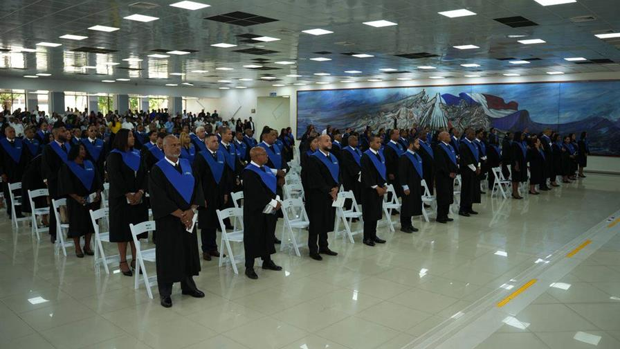

Salman Rushdie: "Para una parte de la sociedad, la cultura se ha convertido en el enemigo"
09 de octubre, 2025
El escritor dijo que el mundo está al revés, porque "la educación, el arte, el pensamiento se consideran cosas malas" El escritor Salman Rushdie afirmó este viernes que, en estos tiempos, "para una parte de la sociedad la cultura se ha convertido en el enemigo", lo que considera "el mundo al revés". "Vivimos en un periodo en el que para una parte de la sociedad la cultura se ha convertido en el enemigo. La educación, el arte, el pensamiento se consideran cosas malas", reflexionó en la inauguración en Granada (sur de España), del encuentro literario Festival Cultur_ALH, que se clausura el domingo. El escritor británico-estadounidense de origen indio (Bombay, 1947) dijo en un diálogo con el autor granadino Andrés Neuman que atribuye el hecho de que lo tilden de hacer realismo mágico a que la suya es una narrativa "en la que no pasa nada, todo es normal". "A mí eso sí que me parece una fantasía y algo mágico, porque el mundo es muy raro", apuntó. En esta conversación sobre el poder de la escritura repasó gran parte de su obra, especialmente su libro 'Cuchillo (Meditaciones tras un intento de asesinato)', que escribió tras sufrir en 2022 cerca de Nueva York un intento de asesinato que lo dejó tuerto y con la movilidad reducida en una mano.